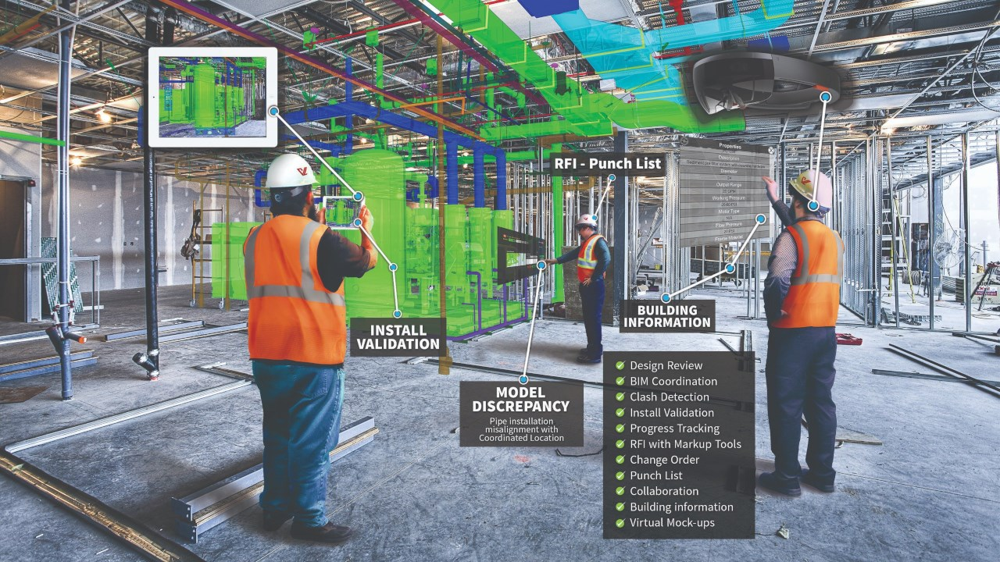
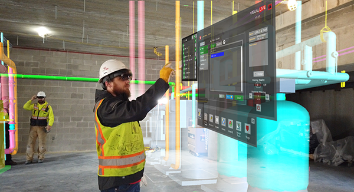

VisualLive


Description
With VisualLive, you can push your 3D models to your mobile device to view in 1:1 scale, bringing the virtual world into the jobsite using our Revit and Navisworks plugins. Your BIM is locked down to its real-world location so you can freely walk around the model and explore it from all angles.